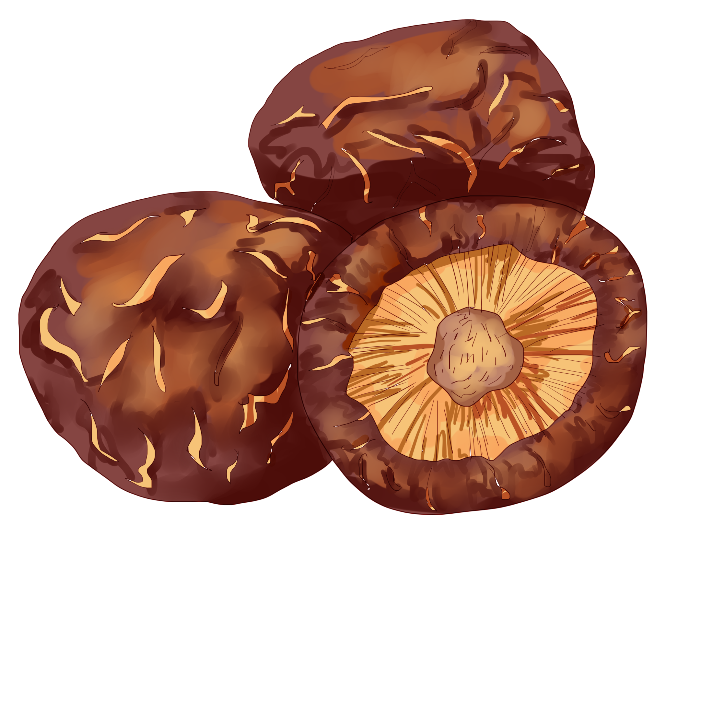
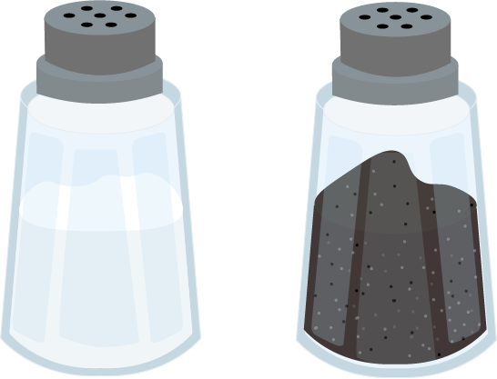

Veggie Filling Recipe 
- 1lb baby bok choy
- 8 shittake mushrooms 
- 2 tbs vegetable oil

- 4oz dried bean curd
- 1tsp light soy sauce
- 1/2 tsp sugar
- 1/2 tbs sesame oil
- 1/8 tsp white pepper

- salt and pepper to taste 
DIRECTIONS
- Prepare a pot of boiling water and an ice bath. Once the pot of water is boiling, blanch the bok choy for a quick 10 seconds in two separate batches. With each batch, the water should be at a rolling boil before you add the bok choy. With a large slotted spoon, scoop out the blanched bok choy and immediately transfer to the ice bath to stop the cooking process.
- Strain the bok choy once it’s cooled completely in the ice bath. Do your best to squeeze out as much water as you can. This step is very important for preventing soggy buns!
- Next, finely chop the bok choy; a food processor is a great time-saver. Transfer to a mixing bowl. Chop the mushrooms finely. Cook them in a wok over medium heat with 2 tablespoons of oil for about 3 to 4 minutes, until they become fragrant. Cool completely.
- Next, finely chop the dried bean curd and set aside.
- To finish the filling, first pour off any visible liquid in the bowl of chopped bok choy before adding in the cooked mushrooms and dried bean curd. Next, add 1 tablespoon of oil, the light soy sauce, sugar, sesame oil, and white pepper. Mix well. Salt to taste, and put the filling in the refrigerator to marinate. Chilling also helps to keep the bok choy green.